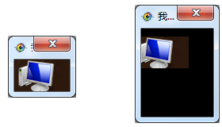

| 命令名称 | Filter_Tailor 延伸裁剪 |
| 命令功能 | (通用图像处理)指定任意范围对内部图像数据进行裁剪 |
| 语法格式 | TURING.Filter_Tailor(Left, Top, Right, Bottom) |
| 参数说明 |
Left：整数型，范围左上角X坐标（可以负数） Top：整数型，范围左上角Y坐标（可以负数） Right：整数型，范围右下角X坐标（可以超过原图大小） Bottom：整数型，范围右下角Y坐标（可以超过原图大小） |
| 返回值 | 无 |
| 按键精灵 |
复制代码
'获取屏幕范围为内部数据
Call TURING.Pixel_FromScreen(10, 10, 80, 50)
'获取图片文件为内部数据
'Call TURING.Pixel_FromPicture("C:\aa.bmp")
'显示图像效果
Call TURING.Pixel_Preview()
'随意裁剪
Call TURING.Filter_Tailor(10, -10, 100, 100)
'显示图像效果
Call TURING.Pixel_Preview()
|
| 滤镜效果 |  |